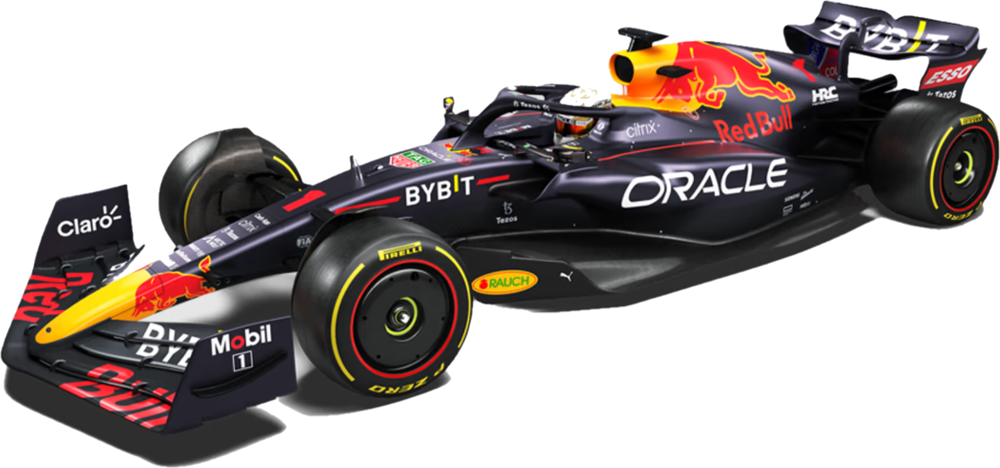
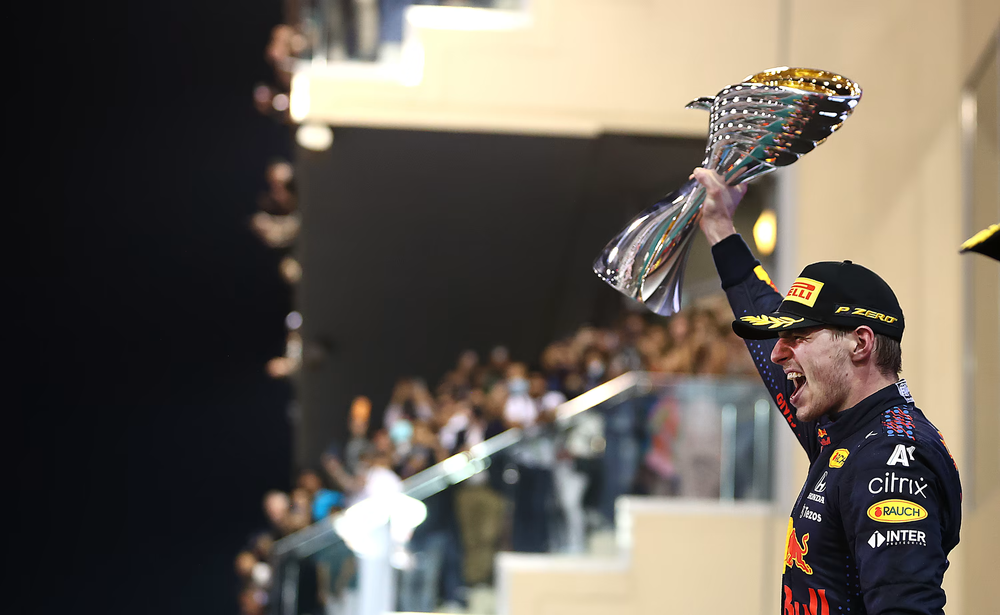

Red Bull Racing, juga diketahui sebagai
Red Bull atau RBR, berkompetisi sebagai Oracle
Red Bull Racing, adalah sebuah tim Formula Satu yang berkompetisi
dengan izin Austria dan berbasis di Britanya Raya. Red Bull Racing adalah salah satu
dari dua tim yang dimiliki oleh perusahaan minuman energi Red Bull GmbH, yang lain bernama AlphaTauri.
Tim ini dipimpin oleh Christian Horner sejak pembentukannya pada 2005 sampai sekarang.
Red Bull memakai mesin Cosworth pada musim 2005 dan mesin Ferrari pada musim 2006.
Tim ini juga menggunakan mesin Renault antara musim 2007 dan 2018 (dari 2016 hingga 2018,
mesin Renault diberi nama “TAG Heuer” setelah putusnya hubungan antara Red Bull dan Renault pada 2015).
Selama kemitraan ini, mereka memenangkan empat gelar Kejuaraan Pembalap dan Konstruktor berturut-turut dari 2010 hingga 2013,
menjadi tim Austria pertama yang memenangkan gelar tersebut. Red Bull mulai menggunakan mesin Honda pada 2019.
Kerja sama Honda mencapai puncaknya pada tahun 2021, ketika mereka memenangkan Kejuaraan Pembalap Dunia.
Menyusul keluarnya Honda dari Formula Satu setelah tahun 2021, tim akan mengambil alih pengoperasian unit daya Honda melalui Red Bull Powertrains.
Namun Honda akan masih menyuplai mesin Red Bull sampai 2025.
RB 18

The Technology
Rear Wing
Sayap belakang juga sangat berbeda dengan generasi sebelumnya.
Tujuan utamanya adalah untuk mengurangi timbulnya udara kotor di belakang mobil.
Langkah pertama menuju ini adalah untuk menyingkirkan pelat ujung sayap belakang. Ini bagus untuk menghasilkan downforce,
tetapi juga untuk menghasilkan udara kotor yang mengganggu stabilitas mobil berikutnya. Bentuk lengkung sayap
belakang yang baru tidak hanya menghilangkan pelat ujung, tetapi bentuknya yang melengkung juga menciptakan
struktur aliran udara yang mengumpulkan getaran dari roda belakang dan menyalurkannya
ke aliran yang keluar dari diffuser belakang, membantu menembakkan banyak ke udara, menyebabkan
lebih sedikit ketidakstabilan untuk mobil berikut.
Underbody and Diffuser
Perubahan terbesar pada mobil generasi baru ini terletak pada bagaimana mereka menghasilkan downforce.
Dirancang untuk mengurangi munculnya udara 'kotor' yang menghambat mobil-mobil berikutnya,
mobil F1 2022 membidik lantai sebagai sumber downforce dan pada dasarnya olahraga ini telah mengembalikan efek tanah,
terakhir terlihat pada mobil pada tahun 1982.
lantai kami telah digunakan untuk selama beberapa dekade dan datang dua terowongan panjang
yang menyalurkan aliran udara di bawah mobil dan kembali ke diffuser belakang. Diffuser yang digaruk
akan menembakkan udara kotor lebih tinggi daripada mobil sebelumnya sehingga energi bangun akan hilang
lebih lama sebelum menabrak mobil berikutnya.
Wheel covers and Winglets
Area utama pengembangan aero untuk tim dalam beberapa tahun terakhir telah menggunakan aliran udara
melalui roda untuk menghasilkan downforce dan, sekali lagi, untuk menyalurkan udara kotor ke luar mobil,
menambah gelombang turbulen yang menyebabkan ketidakstabilan pada mobil berikutnya. Untuk menghilangkan
godaan itu dari para desainer, F1 telah memilih untuk menerapkan penutup roda yang secara fisik mencegah
udara mengalir melalui roda. Namun, penutup pelek baru didefinisikan dengan ketat, sehingga tim tidak
akan bermain-main dengan desain untuk menyalurkan udara yang bergejolak itu. Mobil-mobil baru juga
mendapatkan winglet kecil di atas ban 18” baru musim ini. Ini dirancang untuk membantu mengontrol
bangun yang keluar dari ban depan dan mengarahkannya menjauh dari sayap belakang.
18" Tyres
Setelah lebih dari setengah abad ban 13 inci, pada tahun 2022 ukurannya meningkat menjadi 18 inci.
Menampilkan profil, kompon, dan konstruksi baru, karet baru telah dirancang untuk memiliki jangkauan
kerja yang lebih luas daripada ban 13” dan sebagai hasilnya, panas berlebih terbatas dan degradasi
berkurang, yang secara teori seharusnya memungkinkan pengemudi untuk balapan lebih dekat lebih lama.
Profil bawah yang baru juga harus mengurangi perubahan defleksi dinding samping dan efek bangun yang
terjadi sebagai hasilnya, sekali lagi untuk keuntungan balapan jarak dekat. Selain itu, suhu baru
diperkenalkan untuk selimut ban. Semua ban sekarang akan dipanaskan hingga 70 derajat, bukan 100
derajat di depan dan 80 derajat di belakang, seperti yang terjadi sebelumnya.
Front Wing
Di era hybrid, sayap depan merupakan area fokus besar bagi tim dan semakin kompleks saat tim berusaha
menemukan manfaat aerodinamis yang lebih besar. Sayap depan secara rutin disederhanakan pada tahun-tahun
terakhir mobil generasi terakhir, tetapi untuk tahun 2022 telah benar-benar ditata ulang. Sayap empat
elemen terpasang langsung ke hidung dan memiliki pelat ujung yang sangat sederhana. Idenya adalah bahwa
dengan lantai menghasilkan sebagian besar downforce, sayap depan tidak harus bekerja terlalu keras dan
versi yang disederhanakan juga akan kurang sensitif terhadap gelombang turbulen dari mobil di depan.
Engine specs
Number of valves
4 per cylinder
Drivers
Max Verstappen

Max Emilian Verstappen (lahir 30 September 1997) adalah pembalap Belgia-Belanda dan Juara Dunia Formula Satu 2021.
Dia berkompetisi di bawah bendera Belanda di Formula Satu dengan Red Bull Racing. Dia adalah putra dari mantan pembalap
Formula Satu Jos Verstappen. Verstappen telah meraih 26 kemenangan dan 15 pole position.
Pada Grand Prix Austria 2021, ia mencetak Grand Slam pertama dalam karirnya.
Verstappen akan tetap di Red Bull setidaknya sampai akhir musim 2028 setelah menandatangani perpanjangan kontrak.
Sergio Pérez

Sergio Michel "Checo" Pérez Mendoza lahir 26 Januari 1990),
adalah seorang pembalap Meksiko yang membalap di Formula Satu untuk Red Bull Racing,
setelah sebelumnya membalap untuk Sauber, McLaren, Force India, dan Racing Point.
Dia memenangkan Grand Prix Formula Satu pertamanya di Grand Prix Sakhir 2020,
memecahkan rekor jumlah start sebelum balapan menang di 190. Dia juga meraih posisi pole
pertamanya di Formula Satu di Grand Prix Arab Saudi 2022, memecahkan rekor untuk balapan
terbanyak sebelum pole position pertama di 215. Pérez memiliki kontrak dengan Red Bull Racing hingga akhir musim 2024.